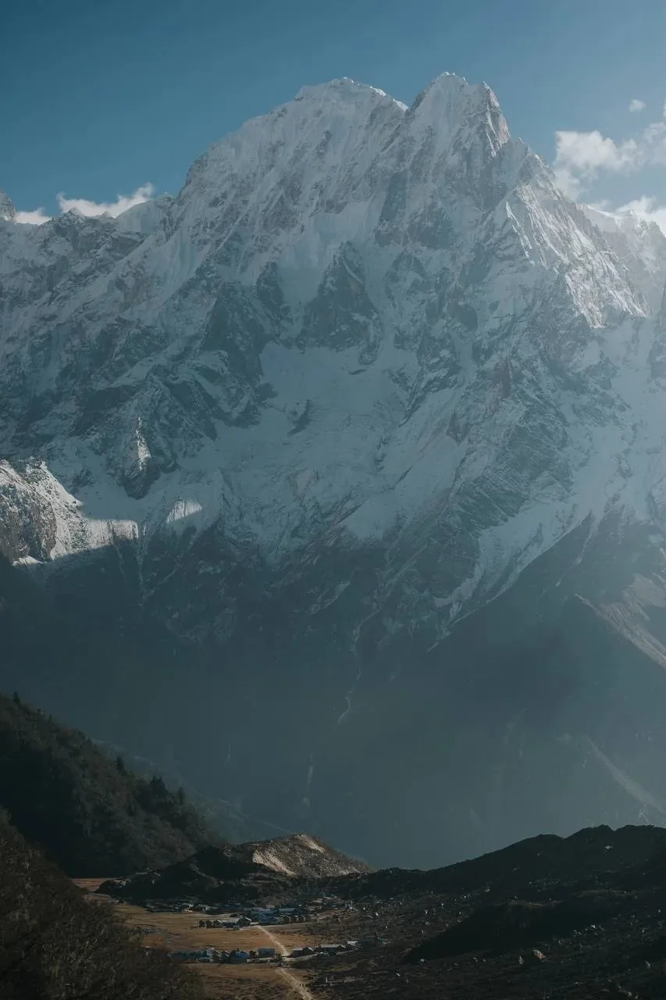
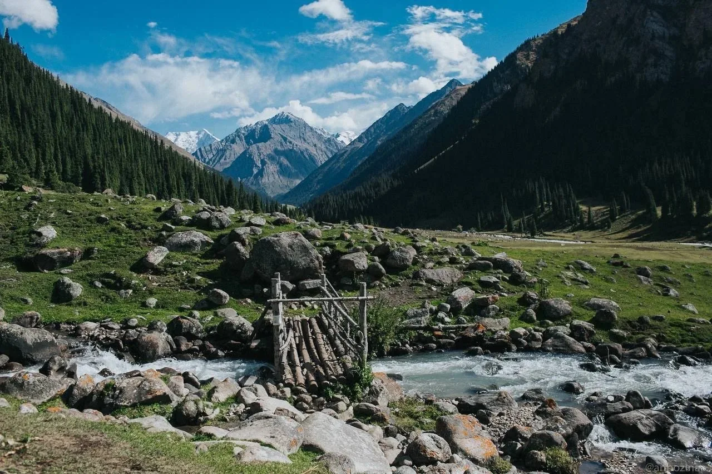
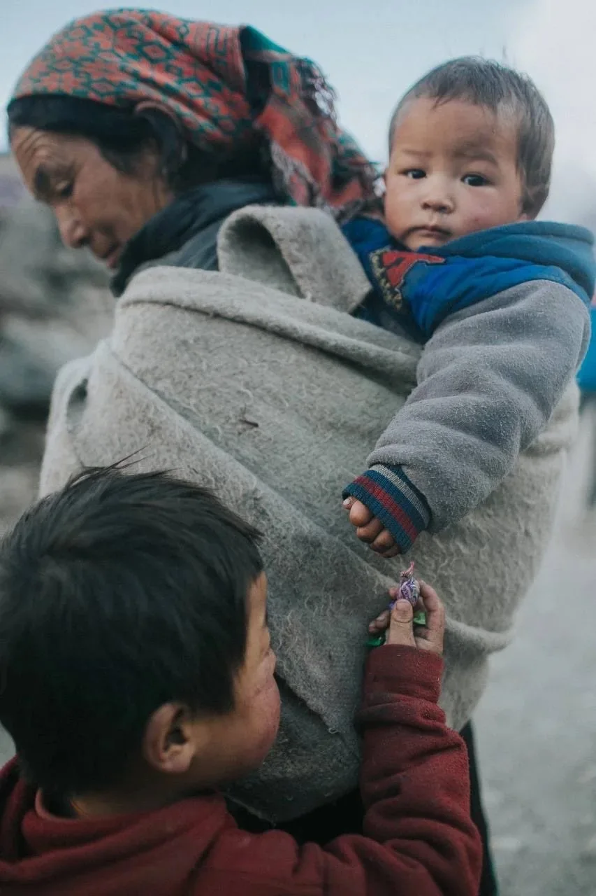
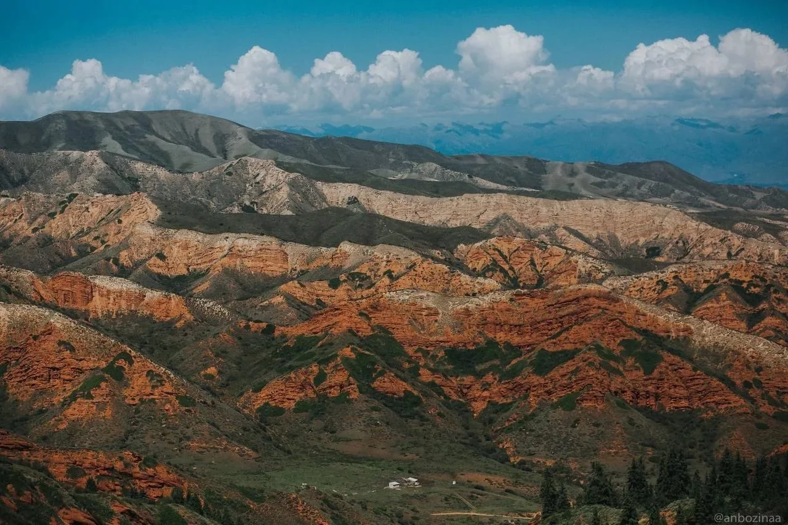
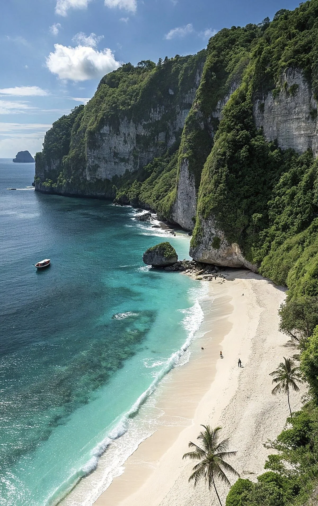
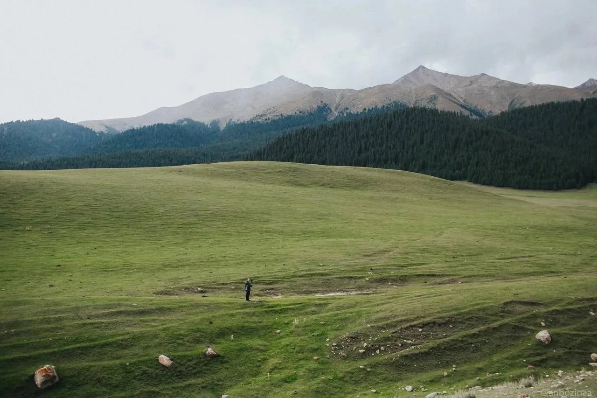
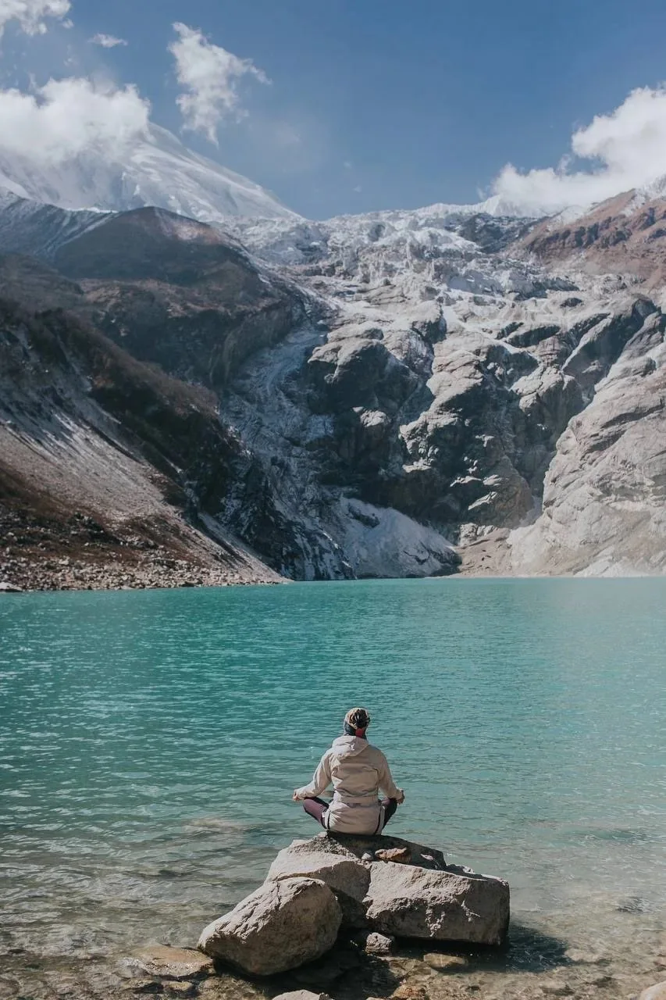
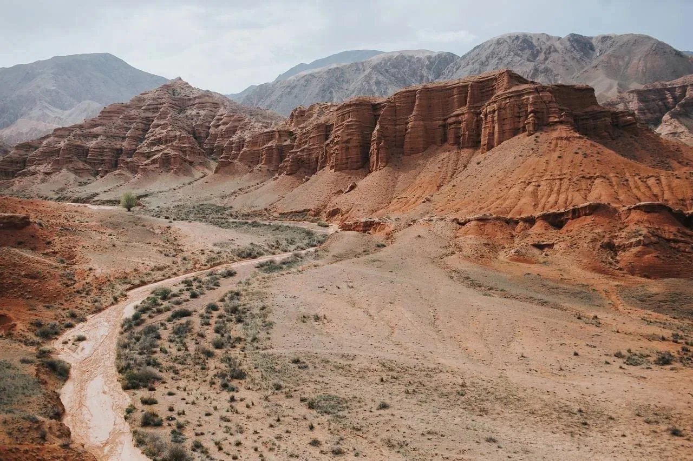
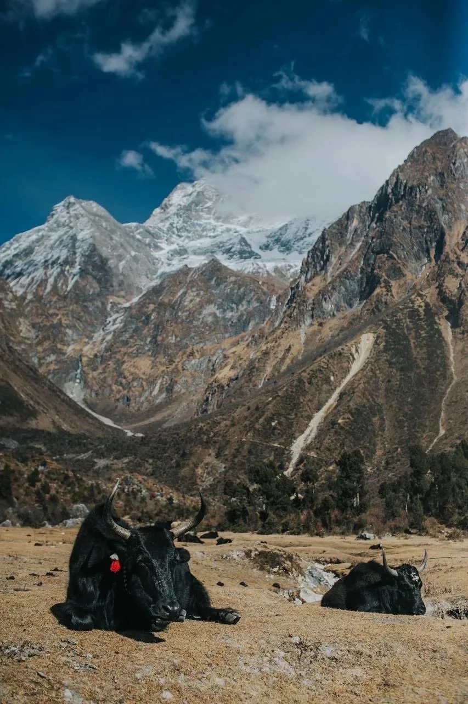

Каждый день —
не случайность.
Маршруты собраны по крупицам: с особенными местами, неожиданными тропами и временем, чтобы действительно всё увидеть.
Есть места, которые остаются в памяти.
А есть путешествия, которые становятся частью тебя.
Мы создаём путешествия, в которых есть место невероятным открытиям, тишине, смеху, маленьким победам и людям, которые со временем становятся близкими.
Мы не собираем достопримечательности по списку. Мы ищем маршруты, которыми хочется делиться — и моменты, которые хочется оставить только себе.



Есть пейзажи, перед которыми привычные слова заканчиваются.
Не торопиться к следующей точке. Замечать то, что обычно проходит мимо.
Встречать людей и культуры, которые остаются с тобой надолго.
У каждого путешествия свой характер. Где-то хочется замереть от красоты. Где-то — проверить себя. А где-то — впервые за долгое время никуда не спешить.

ИЮНЬ — ИЮЛЬ / 8 ДНЕЙ
АПРЕЛЬ — МАЙ / 17 ДНЕЙ

МАРТ 2026
Маршруты собраны по крупицам: с особенными местами, неожиданными тропами и временем, чтобы действительно всё увидеть.
Без соревнования с группой. С вниманием к разным возможностям и темпу каждого. С правом выбрать свой путь.
Организация, переезды и детали уже продуманы. Что входит в стоимость, подробно рассказано на странице каждого путешествия.


Можно измерять путешествия километрами, высотой гор и количеством увиденных мест. А можно — моментами, когда от красоты не находишь слов, когда хочется остановиться и просто быть здесь.
Мы отправляемся в путь, чтобы почувствовать многогранность мира, прикоснуться к другой культуре и услышать собственные мысли. И самое удивительное происходит потом: ты возвращаешься домой, но что-то из путешествия навсегда остаётся с тобой.
Посмотреть маршруты ↗
«Я много путешествовала в жизни, но никогда не была в таком наполненном путешествии».
Спустя три месяца после поездки эмоции всё ещё возвращаются.
Прочитать настоящую историю
А пока — выбери место, о котором хочется мечтать. И сделай первый шаг.